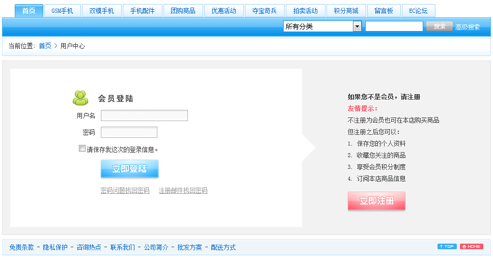
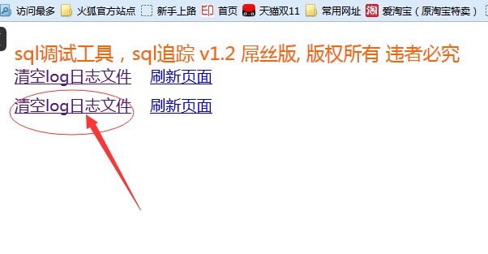
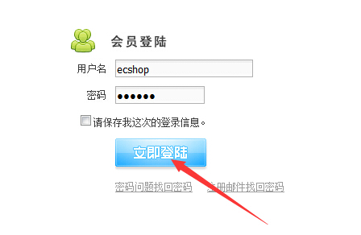
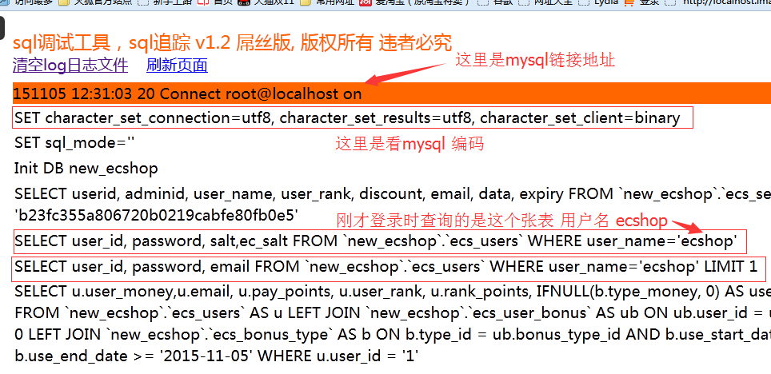

大家经常在开发过程中 遇到sql问题, 比如一个开源系统,不清楚他的表结构, 执行代码不知道它往数据库中执行了什么操作,
在没有这个工具之前 开发很痛苦, 一步步的去分析代码, 查看代码操作了哪些表, 传了哪些参数, 一步步打印出来.耗费时间非常漫长
有了这工具,几秒钟时间完成了原有几个小时的排查工作,尤其是二次开发,能瞬间知道数据表结构. 迅速调试出 bug 所在处,你每点击一次操作都知道它怎么操作数据库的
以下随便拿个系统举例子说明: 示范案例

比如这个系统,我不熟悉,不知道他用户表是哪个,不知道他点击登录,更新哪个登录日志表,哪里给用户添加登录积分,更改哪张统计表

第一步先清空上次的 sql 记录, 然后接下来下一步

输入账号 ecshop 密码 点击登录. 再回到sql 追踪器 点击 刷新页面 神奇的事情出现了

除了以上 还可以追踪到 更改了那张用户登录日志表, 在哪里给用户添加了登录积分. 哪里更改了用户最后登录时间 所有相关操作的表的查询出来
详细搭建方法查看根目录下的 config.php 文件, 需要开发mysql的标准日志, 群主开发的,作者 IT宇宙人 QQ 1273276548 和 木偶人 QQ467661992
看着地址加对应的群:
php北京群:224612563
php上海群:203320537
php深圳2群:209669661
php深圳1群:182127670
php杭州群:209983691
php成都群:488097296
php广州群:364702379
php武汉群:312123912
php南京 496341851
php重庆 243249226
ecshop群:216961593